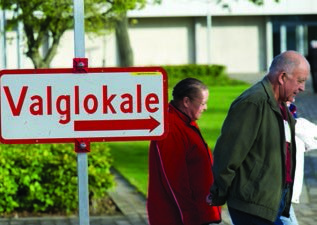
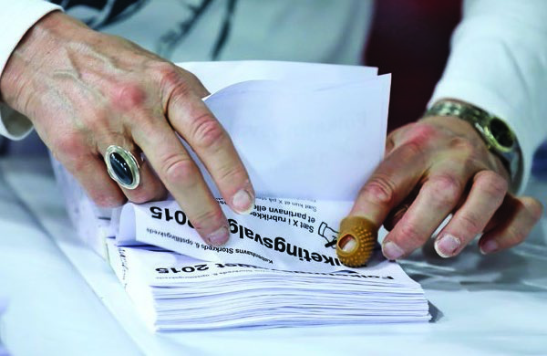
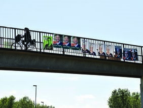
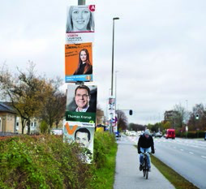

Fakta-ark 15: Folkestyret
Áudio
sidde 81
Fakta-ark 15: Folkestyret i praksis – valg og partier
Læremateriale Til Medborgerskabsprøven

sidde 82
Frie valg er noget af det vigtigste i et demokrati. Ved at stemme til folketingsvalg har den enkelte borger indflydelse* på, hvem der skal være medlem af Folke tinget. Ved kommunal- og regionalvalg har man indflydelse på, hvem der skal være medlem af den lokale kommunalbestyrelse eller det lokale regionsråd.
Læremateriale Til Medborgerskabsprøven Fakta-Ark 15: Folkestyret I Praksis – Valg Og Partier
Dette fakta-ark handler om: • Valg og partier • Politisk aktivitet
Valg Og Partier
Frie og hemmelige valg er noget af det vigtigste i et demokrati. Der afholdes fire valg i Danmark til poli tiske organer.
Det svarer til fire politiske niveauer:
1. Det lokale niveau: Kommunal
bestyrelsen 2. Det regionale niveau: Regionsrådet 3. Det nationale niveau: Folketinget 4. EU-niveauet: Europa-Parlamentet
Desuden afholdes der nogle gange folkeafstemninger om nogle helt konkrete ting, fx om valgretsalderen, eller hvis Danmark skal overlade suverænitet, dvs. dansk selvbestemmelse, til et internationalt organ. Det vigtigste eksempel på afgivelse af suverænitet er Danmarks medlemskab af EU.
Man har ikke pligt til at stemme til valgene, men mange gør det. Stemme procenten er høj i Danmark sammenlignet med mange andre lande. Normalt stemmer cirka 85 procent af de stemmeberettigede ved folketingsvalgene. Der er færre, der stemmer til kommunalog regionsvalg (i 2025 69 procent) og til valg Europa-Parlamentet (i 2024 58 procent).
Valg Til Folketinget
Det er statsministeren, der bestemmer, hvornår der skal udskrives folketings valg, men der skal dog være valg til Folketinget mindst hvert fjerde år. Og det sker ofte, inden de fire år er gået. For at kunne stemme til folketingsvalg skal man have valgret, dvs., at man skal:
- Have dansk statsborgerskab
- Være fyldt 18 år
- Have fast bopæl i Danmark, på Færøerne eller i Grønland
sidde 83
Hvis man opfylder betingelserne* for at have stemmeret, er man normalt også valgbar, dvs., man kan vælges til Folketinget.
Læremateriale Til Medborgerskabsprøven Fakta-Ark 15: Folkestyret I Praksis – Valg Og Partier
I Danmark vælges der 175 medlemmer til Folketinget. Befolkningerne i Grøn land og på Færøerne vælger herudover hver to medlemmer til Folketinget. Det betyder, at der i alt er 179 medlemmer af Folketinget. Efter det sidste Folke tingsvalg i 2026 er 49 procent af de valgte medlemmer af Folketinget kvinder.
Valg Til Kommune Og Region
Der er valg til kommunalbestyrelser og regionsråd hvert fjerde år. Man skal være fyldt 18 år for at kunne stemme til kommunal- og regionalvalg. Man stemmer på politikerne i den kommune og region, hvor man bor.
Man behøver ikke have dansk statsborgerskab for at stemme til kommunalog regionalvalg. Personer, som er statsborgere i et andet EU-land, Norge eller Island, har også stemmeret til kommunal- og regionalvalg, hvis de har fast bopæl i Danmark. Desuden har andre udlændinge, der har boet fast i Danmark i de sidste fire år inden valgdagen, stemmeret til kommune og region. Hvis man opfylder betingelserne for at have stemmeret, er man som udgangspunkt også valgbar, dvs. at man kan vælges til kommunalbestyrelse eller regionsråd.
Der er i alt 98 kommuner i Danmark. Der vælges en kommunalbestyrelse i hver kommune. De enkelte kommunalbestyrelser har et forskelligt antal medlemmer – mellem 19 og 31 afhængigt af, hvad kommunalbestyrelsen har besluttet.
I de mindste kommuner er der dog ned til ni medlemmer og i København er der op til 55 medlemmer. Omkring 36 procent af de valgte er kvinder. I kommunerne er der ofte også opstillet* lokale partier, som ikke opstiller til Folketinget, men kun opstiller i en bestemt kommune.
Valg til regionsrådet foregår samtidig med valget til kommunalbestyrelsen. Der er fem regioner i Danmark, og hver region har et regionsråd. Der er 41 medlemmer i hvert regionsråd. Omkring 50 procent af de valgte er kvinder. Regionsrådene tager sig først og fremmest af sygehusene.
Valg Til Europa-Parlamentet
Der er valg til Europa-Parlamentet hvert femte år (2019, 2024, 2029 osv.). Valget foregår inden for samme periode i alle EU-landene. Man har valgret til Europa-Parlamentsvalget i Danmark, hvis man er statsborger i et EU-land og er fyldt 18 år. Man kan som EU-borger stemme i det EU-land, hvor man bor, eller i det EU-land, hvor man er statsborger. Danmark vælger 15 medlemmer til Europa-Parlamentet.

sidde 84
Sådan Foregår Et Valg
Læremateriale Til Medborgerskabsprøven Fakta-Ark 15: Folkestyret I Praksis – Valg Og Partier
Et valg foregår ved hemmelig afstemning. Det betyder, at ingen andre må se, hvad eller hvem man stemmer på. Nogle dage inden valget får man et valgkort med posten. Valgkortet er et bevis på, at man har ret til at stemme. På valgkortet står der oplysninger om, hvor og hvornår man skal stemme. Valgstedet kan fx være en lokal skole eller et rådhus. Hvis man har ret til at stemme og ikke har fået et valgkort, kan man kontakte kommunen. Man kan dog godt stemme, hvis man ikke har sit valgkort med. I det tilfælde skal man medbringe legitimation.
På valgdagen tager man sit valgkort med til valgstedet. Når man kommer til valgstedet, afleverer man sit valgkort og får en stemmeseddel med navnene på alle dem, der stiller op til valget, og som man kan stemme på i ens kommune og region. Navnene er ordnet efter, hvilket parti kandidaterne tilhører. Man stemmer ved at sætte et kryds enten ud for et parti eller ud for en bestemt person (en kandidat) på stemmesedlen. Enkelte vælger også at stemme blankt, ofte som protest. Det vil sige, at man ikke sætter noget kryds, men blot afleverer sin stemmeseddel.
Man kan også stemme inden valget, hvis man foretrækker det, fx fordi man er bortrejst på selve valgdagen. Det kaldes at brevstemme. Man kan brevstemme alle steder i landet og ikke bare i den kommune, hvor man bor – samt ved alle danske repræsentationer i udlandet.
sidde 85
De Politiske Partier
Læremateriale Til Medborgerskabsprøven Fakta-Ark 15: Folkestyret I Praksis – Valg Og Partier
Et politisk parti er en forening, der arbejder for et bestemt politisk program og opstiller* kandidater til et valg.
Det består normalt af personer, der støtter et bestemt politisk program, dvs. en række synspunkter på samfundet. Enhver kan melde sig ind i et politisk parti. I en valgkamp foregår den politiske kamp først og fremmest mellem partiernes kandidater. Ved folketingsvalg kan man dog også stille op som kandidat uden for partierne.
Folketingets medlemmer er i langt de fleste tilfælde medlem af et politisk parti. Det er dog sket, at en person er blevet valgt til Folketinget uden at være medlem af et politisk parti.
Ved folketingsvalget i 2026 blev følgende partier repræsenteret i Folketinget. Partierne er oplistet efter, hvor mange stemmer de fik: • Socialdemokratiet • SF • Venstre • Liberal Alliance • Dansk Folkeparti • Moderaterne • Det Konservative Folkeparti • Enhedslisten • Radikale Venstre • Danmarksdemokraterne • Alternativet • Borgernes Parti
Samt to medlemmer valgt på Færøerne fra hvert sit parti: • Sambandsflokkurin • Javnaðarflokkurin
Og to medlemmer valgt i Grønland fra hvert sit parti: • Inuit Ataqatigiit • Nalaraq
Nogle gange bliver en politiker i Folketinget uenig med sit parti og vælger at melde sig ud af partiet. Det betyder dog ikke, at politikeren skal forlade Folke tinget. Hvis politikeren vil fortsætte som medlem af Folketinget, kan vedkom mende enten skifte til et andet parti eller blive løsgænger, dvs. stå uden for parti erne. Vedkommende kan også vælge at starte et helt nyt parti.


sidde 86
Politisk Aktivitet
Læremateriale Til Medborgerskabsprøven Fakta-Ark 15: Folkestyret I Praksis – Valg Og Partier
Politiske partier
Et politisk parti består typisk af personer, som i vidt omfang* har fælles politiske synspunkter. Foreningsfriheden betyder, at ingen myndighed kan blande sig i, at man melder sig ind i et parti, eller hvilket parti man er medlem af. Ca. 106.000 er medlem af et politisk parti.
Medlemmerne betaler normalt et kontingent* til partiet, men partierne får også penge af staten i forhold til, hvor mange stemmer partiet får. De politiske partier er foreninger med en demokratisk opbygning. De er i dag organiseret som lokale (fx kommunale) vælgerforeninger, og en af partimedlemmernes vigtigste opgaver er at bestemme, hvem der skal være kandidater til de forskellige slags valg. De politiske partier har forskellige regler for, hvordan valget af kandidater foregår.
Interesseorganisationer
Mange borgere er medlem af en interesseorganisation. Det er en sammenslut ning* af personer, som har en interesse til fælles, fx en fagforening for rengø ringspersonale eller en patientforening for personer med hjerteproblemer.
Virksomheder kan også danne interesseorganisationer, fx organisationer for landmænd eller butiksejere. Der kan også være organisationer, der samler sig om en bestemt sag, fx Amnesty International eller Danmarks Naturfrednings forening. En interesseorganisation forsøger at få indflydelse på den politik, der føres på områder, som er vigtige for organisationens medlemmer. De store inte resseorganisationer har således tit kontakt til politikere og embedsmænd og forsøger at påvirke politikerne – fx ved at give dem forskellige former for viden om emner, der er vigtige for interesseorganisationen.
sidde 87
Græsrodsbevægelser og demonstrationer
Læremateriale Til Medborgerskabsprøven Fakta-Ark 15: Folkestyret I Praksis – Valg Og Partier
Græsrodsbevægelser er mindre formelt organiseret end interesseorganisati oner. I en græsrodsbevægelse er det først og fremmest deltagernes aktivitet, der giver bevægelsen dens kraft.
Mange græsrodsbevægelser benytter sig af protester for at påvirke politikerne. Det kan nogle gange være gennem demonstrationer, men det mest almindelige er indsamling af underskrifter.
I Danmark er der frihed til at demonstrere. Før man afholder optog og møder på veje, skal man give besked til politiet, men der kræves ingen tilladelse til at holde demonstrationen. Politiet kan nogle gange kræve, at en demonstration bliver afholdt et andet sted.
Det kunne fx være, hvis politiet mener, at der er fare for, at demonstrationen vil udvikle sig voldeligt. Politiet kan også stille krav til, hvordan demonstrati onen skal foregå. Det er kun under helt særlige omstændigheder, at politiet kan forbyde en demonstration.
Brug af medier
Man kan som borger forsøge at påvirke politikken ved at skrive et læserbrev til en avis. Man kan også henvende sig direkte til aviser eller TV for at gøre opmærksom på en sag og så håbe, at medierne vil tage sagen op.
De elektroniske medier giver andre muligheder for at påvirke politikken. Gennem underskriftsindsamlinger via internettet eller i Facebookgrupper kan befolk ningen debattere politikerne, partierne eller forskellige konkrete sager. Borgerne kan desuden vise deres utilfredshed med bestemte love eller bestemmelser og på den måde påvirke politikerne. Borgerne bruger også flittigt muligheden for at skrive kommentarer på avisernes hjemmesider eller indlæg på forskellige diskussionsfora på internettet.
Politikerne henvender sig også i stigende grad til befolkningen gennem de sociale medier, Face book og X. Fx sker det nogle gange, at politikere kommen terer en sag på Facebook i stedet for at stille op til interview.
Fonte: Læremateriale til Medborgerskabsprøven, SIRI.